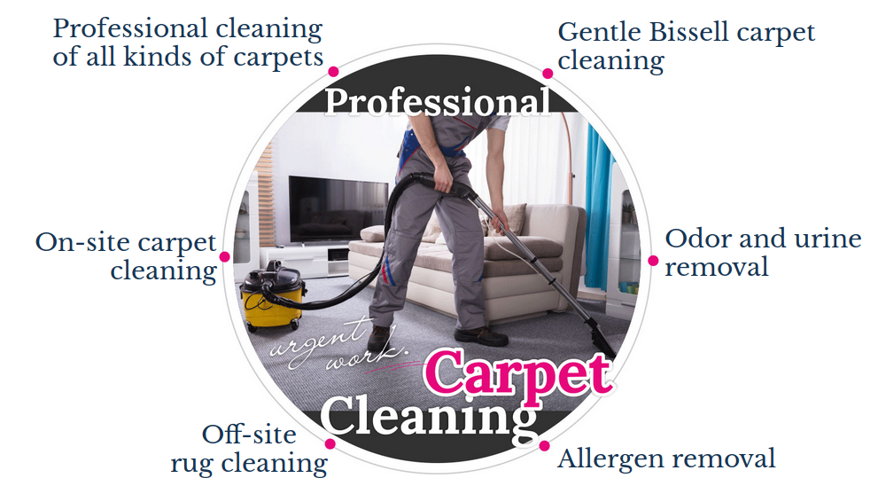

If you don’t want to ruin your expensive (or even not that expensive) carpet, but you do want to make it clean and get rid of constant smells, you should choose the correct reagents and their dosage. Our staff are specialists at finding the perfect reagent combinations; this way we ensure that we use appropriate means for a given kind of a material. Remember, we use chemicals that have been tested and they are proven to be safe for people and animals.


Carpets and Rugs
Cleaning
- Cleaning of jute carpets
- Upholstery cleaning/ disinfection/ stains and odor removal
- Cleaning of shag carpets
- Removal of food and drinks stains, play-doh, ink, gum and wax
- Cleaning of wool carpets
- Removal of pet hair, odor and urine. disinfection
- Cleaning of large rugs, children's rugs


Carpets and Rugs
Cleaning

Rugs and carpets make your house so comfortable!
Rugs or carpets are a great addition to any interior. They look nice and feel nice especially when you have the habit to walk barefoot around your house. But rugs do need special attention and care. In fact, keeping them clean can become a real chore. We walk on them every day and being in the lowest position in a room they quickly collect dust and dirt from everything. Even your regular furniture dusting becomes a dust collection for your carpet. Add to that spilled drinks, pets marking their territory and kids making their clay figurines in the living room. And even if you don’t get anything spilled or smudged on the rug, it still needs a biannual cleaning and disinfection even if there are no obvious stains or dirt.
But before you start vigorous cleaning, don’t forget, it’s essential to know how to take care of your rugs and carpets properly. Many of them can be damaged by excessive rubbing, aggressive detergents or even water. Water is surprisingly dangerous for the structural integrity and colors of any natural fibers.
Of course, you still can clean most of carpets and rugs yourself. But in some cases it’s always better to call Near Me Services in Glendale and let experts use their knowledge and skills to clean your carpets safely and leave them looking like new.
Rugs and carpets make your house so comfortable!
Rugs or carpets are a great addition to any interior. They look nice and feel nice especially when you have the habit to walk barefoot around your house. But rugs do need special attention and care. In fact, keeping them clean can become a real chore. We walk on them every day and being in the lowest position in a room they quickly collect dust and dirt from everything. Even your regular furniture dusting becomes a dust collection for your carpet. Add to that spilled drinks, pets marking their territory and kids making their clay figurines in the living room. And even if you don’t get anything spilled or smudged on the rug, it still needs a biannual cleaning and disinfection even if there are no obvious stains or dirt.
But before you start vigorous cleaning, don’t forget, it’s essential to know how to take care of your rugs and carpets properly. Many of them can be damaged by excessive rubbing, aggressive detergents or even water. Water is surprisingly dangerous for the structural integrity and colors of any natural fibers.
Of course, you still can clean most of carpets and rugs yourself. But in some cases it’s always better to call Near Me Services in Glendale and let experts use their knowledge and skills to clean your carpets safely and leave them looking like new.


You know I don’t let the dog in the living and dining rooms, but I have a feeling that somehow Aspen enjoys spending time...
>>Testimonals
what our clients say
I got this expensive Persian rug as a wedding gift. It looks gorgeous. Well, it looked gorgeous before we had a baby. When Max ...
>>I got this expensive Persian rug as a wedding gift. It looks gorgeous. Well, it looked gorgeous before we had a baby. When Max ...
>>Carpet cleaning:
phases
The cleaning procedure for carpets and upholstery has five phases:
01.Dry cleaning
An effective cleaner removes contaminants that have not "settled" in the fiber.
02.Dissolving old dirt
The application of a special water-based solution that dissolves “settled” (old) dirt.
03.Cleaning of reagents
The application of cleaning foam with professional equipment to remove traces of cleaning solutions.
04.Manual cleaning of carpets, rugs and upholstery
Most likely dirt or stains that are not a day old are almost impossible to remove with special equipment, that’s why old stains are disposed of manually.
05.Drying
Any carpet must be dried properly in a certain position to restore original the fibers’ shape and avoid mold, fungi and musty smells.
The cleaning procedure for carpets and upholstery has five phases:
01.Dry cleaning
An effective cleaner removes contaminants that have not "settled" in the fiber.
02.Dissolving old dirt
The application of a special water-based solution that dissolves “settled” (old) dirt.
03.Cleaning of reagents
The application of cleaning foam with professional equipment to remove traces of cleaning solutions.
04.Manual cleaning of carpets, rugs and upholstery
Most likely dirt or stains that are not a day old are almost impossible to remove with special equipment, that’s why old stains are disposed of manually.
05.Drying
Any carpet must be dried properly in a certain position to restore original the fibers’ shape and avoid mold, fungi and musty smells.
Dangers of unprofessional cleaning
 A capable vacuum cleaner can remove up to 60% of dirt, allowing the other 40% to penetrate into the rug deeper and create a 'hazard zone'. The 'hazard zone' becomes a nurturing place for tiny unwanted house guests, called dust mites or sources of an allergy. After some time, these rugs may cause health issues, and wet cleaning with usual home remedies just makes it worse.
A capable vacuum cleaner can remove up to 60% of dirt, allowing the other 40% to penetrate into the rug deeper and create a 'hazard zone'. The 'hazard zone' becomes a nurturing place for tiny unwanted house guests, called dust mites or sources of an allergy. After some time, these rugs may cause health issues, and wet cleaning with usual home remedies just makes it worse.Clean don’t grind
“What doesn’t kill you makes you stronger” works for contamination in the rug or carpet as well. Using homemade remedies, inexperienced cleaners penetrate the dirt deeper in and make it difficult to clean at home. Some particularly resistant stains require a professional hand only.Carpet cleaning service will spare your rugs from early retirement to the refuse pile, restoring their original structure and the shine of hues.

One confused kitty
 One more risk is odor. Some odors are imperceptible to the human sense of smell, but they're attractive for pets: a cat can "confuse" a carpet with a litter box and start using the expensive rug as its regular place, which makes for a cute video and an unhappy rug owner. Of course, this can lead to a threat of infection, especially if kids walk barefoot on the floor.
One more risk is odor. Some odors are imperceptible to the human sense of smell, but they're attractive for pets: a cat can "confuse" a carpet with a litter box and start using the expensive rug as its regular place, which makes for a cute video and an unhappy rug owner. Of course, this can lead to a threat of infection, especially if kids walk barefoot on the floor.